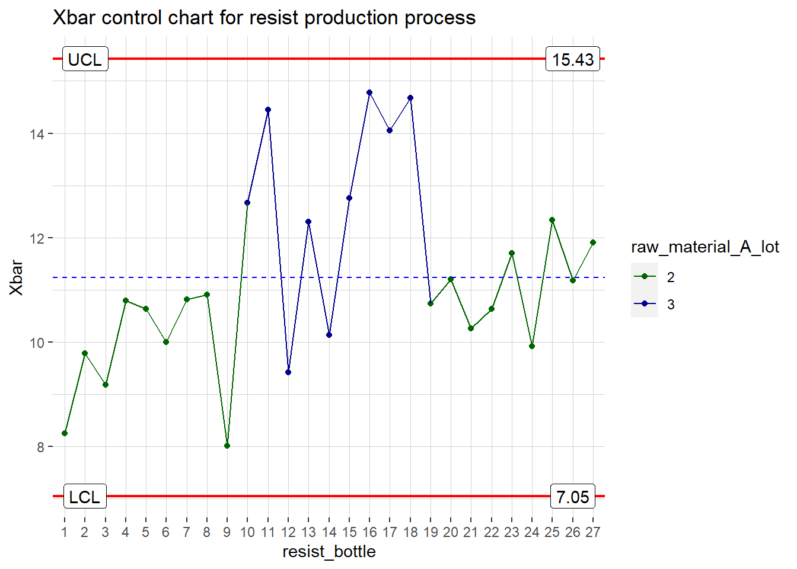

\(~\) \(~\) \(~\) \(~\)
Control Chart Demo
In this demo, I will build process control charts from scratch using ggplot2. I am new to R, and although I have made more than a few process QC visualizations,I have not used R for building a single one! In case you are wondering, my go to platform at work used to be JMP/JSL, but I am on parental leave now, and do not want to spend the money for purchasing a JMP license - thankfully R is free and this way I get to learn something new, its a WIN-WIN!
I am going to use the article HERE as a guide for control limit calculations.
First step is to create a dataset. Below code will simulate production line data from a photresist (a chemical, usually liquid, used for manufacturing computer chips) manufacturing plant. The manufacturing process is a ‘batch process’ where each batch produces 100 bottles of resist. After packaging, 3+3+3 bottles are pulled from beginning, middle and end of the fill process and sent to internal QC. One of the QC check is to measure resist coat thickness after spin coating dummy silicon wafers. In reality, many variables (temperature, humidity, time elapsed between various process steps, operator, container/reactor and so on) can affect the end result.
In below example - to keep things simple - we will only be looking at the variability as a function of varying raw material lot. For QC of this process I will be choosing a Xbar R chart.
set.seed(5555)
resist_df1 <- data.frame(
resist_bottle = as.factor(rep(1:9, each=3)),
measurment_order = rep(seq(1:3),3),
coat_thickness = rnorm(n = 3*9, mean = 10, sd = 2),
batch = as.ordered(rep(1)),
raw_material_A_lot = as.ordered(rep(2)),
raw_material_B_lot = as.ordered(rep(1)),
date_run = seq(as.POSIXct('2019/01/01 00:53:00'), as.POSIXct('2019/01/02 02:53:00'), by="hour")
)
resist_df2 <- data.frame(
resist_bottle = as.factor(rep(10:18, each=3)),
coat_thickness = rnorm(n = 3*9, mean = 11, sd = 6),
measurment_order = rep(seq(1:3),3),
batch = as.ordered(rep(2)),
raw_material_A_lot = as.ordered(rep(3)),
raw_material_B_lot = as.ordered(rep(1)),
date_run = seq(as.POSIXct('2019/01/02 03:53:00'), as.POSIXct('2019/01/03 05:53:00'), by="hour")
)
resist_df3 <- data.frame(
resist_bottle = as.factor(rep(19:27, each=3)),
coat_thickness = rnorm(n = 3*9, mean = 10.5, sd = 1.6),
measurment_order = rep(seq(1:3),3),
batch = as.ordered(rep(3)),
raw_material_A_lot = as.ordered(rep(2)),
raw_material_B_lot = as.ordered(rep(2)),
date_run = seq(as.POSIXct('2019/01/03 06:53:00'), as.POSIXct('2019/01/04 08:53:00'), by="hour")
)
resist_df <- rbind(resist_df1, resist_df2, resist_df3)
head(resist_df)## resist_bottle measurment_order coat_thickness batch raw_material_A_lot raw_material_B_lot date_run
## 1 1 1 8.461665 1 2 1 2019-01-01 00:53:00
## 2 1 2 9.104604 1 2 1 2019-01-01 01:53:00
## 3 1 3 7.191413 1 2 1 2019-01-01 02:53:00
## 4 2 1 10.784097 1 2 1 2019-01-01 03:53:00
## 5 2 2 11.488648 1 2 1 2019-01-01 04:53:00
## 6 2 3 7.077962 1 2 1 2019-01-01 05:53:00In the data table, you can see that each sample is measured 3x. We need to take the average of 3 measurments to calculate the Xbar for each sample, as well as the overall mean and the centerline for the plot. In the below snippet, first I created two new columns Xbar and range. Then I iterated through the data to calculate mean and range for each sample. Then I calcualated the centerline (cl), upper control limits (ucl), and lower control limit (lcl) for Xbar chart. This was followed by the range, as well as the upper control limit (ucl) for range calculation. The constants used in the formulas were taken from the article referenced at the begining of this post.
resist_df_sbset <- resist_df[,-7] #deleting the timestamp column
#wide format to take average of 3 measurments for each sample
resist_df_wide<-spread(resist_df_sbset,measurment_order, coat_thickness )
names(resist_df_wide)[names(resist_df_wide)=="1"] <- "Measurment1"
names(resist_df_wide)[names(resist_df_wide)=="2"] <- "Measurment2"
names(resist_df_wide)[names(resist_df_wide)=="3"] <- "Measurment3"
# new columns for Xbar and range
resist_df_wide$Xbar <- 0
resist_df_wide$range <- 0
#looping through the data to calculate Xbar and range and populating the
#new empty columns
for(i in 1:nrow(resist_df_wide)) {
subgrp_mean<- (resist_df_wide$Measurment1[i]+resist_df_wide$Measurment2[i]+resist_df_wide$Measurment3[i])/3
resist_df_wide$Xbar[i] <- subgrp_mean
subgrp_range <- (max(resist_df_wide$Measurment1[i],resist_df_wide$Measurment2[i],resist_df_wide$Measurment3[i]))-(min(resist_df_wide$Measurment1[i],resist_df_wide$Measurment2[i],resist_df_wide$Measurment3[i]))
resist_df_wide$range[i] <- subgrp_range
}
#control limit and range calculations
cl<- round(mean(resist_df_wide$Xbar),2)
rnge<- round(mean(resist_df_wide$range),2)
ucl.xbar<- round(cl+1.023*rnge,2)
lcl.xbar<- round(cl-1.023*rnge,2)
ucl.rnge<- round(2.574*rnge,2)Now its time to make the plot.
plt.xbar <-ggplot(resist_df_wide, aes(x=resist_bottle, y=Xbar, group = 1))+
geom_point()+
geom_line()+
geom_hline(aes(yintercept=ucl.xbar), color = "red", size = 0.75)+
geom_label(aes(x = 1, ucl.xbar, label = "UCL"), nudge_x = 1)+
geom_label(aes(x = 25, ucl.xbar, label = ucl.xbar), nudge_x = 1)+
geom_hline(aes(yintercept=lcl.xbar), color = "red", size = 0.75)+
geom_label(aes(x = 1, lcl.xbar, label = "LCL"), nudge_x = 1)+
geom_label(aes(x = 25, lcl.xbar, label = lcl.xbar), nudge_x = 1)+
geom_hline(aes(yintercept=cl), color = "blue", linetype = "dashed", size = 0.5)+
ggtitle("Xbar control chart for resist production process")+
th1
plt.rnge <- ggplot(resist_df_wide, aes(x=resist_bottle, y=range, group = 1))+
geom_point()+
geom_line()+
geom_hline(aes(yintercept=ucl.rnge), color = "red", size = 0.75)+
geom_label(aes(x = 1, ucl.rnge, label = "UCL"), nudge_x = 1)+
geom_label(aes(x = 25, ucl.rnge, label = ucl.rnge), nudge_x = 1)+
geom_hline(aes(yintercept=rnge), color = "blue", linetype = "dashed", size = 0.5)+
ggtitle ("Range chart for resist production process")+
th1
plt.xbar
plt.rnge The range chart is out of control, which points to an unstable process.
The process is showing an assignable cause variation even on Xbar chart
in the middle, from bottle 10-18. This is the second batch of the resist
that was produced per the dataset we created. We have the raw material
lot data available, we can plot the data as a function of raw material
lots to assess whether this variation can be attributed to a bad batch
of raw material.
The range chart is out of control, which points to an unstable process.
The process is showing an assignable cause variation even on Xbar chart
in the middle, from bottle 10-18. This is the second batch of the resist
that was produced per the dataset we created. We have the raw material
lot data available, we can plot the data as a function of raw material
lots to assess whether this variation can be attributed to a bad batch
of raw material.
#Xbar plot color by raw material A lot
resist_df_wide$raw_material_A_lot <- factor(resist_df_wide$raw_material_A_lot, levels = c('2','3'))
plt.xbar.grp.lotA <-ggplot(resist_df_wide, aes(x=resist_bottle, y=Xbar, group = 1, color = raw_material_A_lot))+
geom_point()+
scale_color_manual(values = c.palette)+
geom_line()+
geom_hline(aes(yintercept=ucl.xbar), color = "red", size = 0.75)+
geom_label(aes(x = 1, ucl.xbar, label = "UCL"), nudge_x = 1, color = "black")+
geom_label(aes(x = 25, ucl.xbar, label = ucl.xbar), nudge_x = 1, color = "black")+
geom_hline(aes(yintercept=lcl.xbar), color = "red", size = 0.75)+
geom_label(aes(x = 1, lcl.xbar, label = "LCL"), nudge_x = 1, color = "black")+
geom_label(aes(x = 25, lcl.xbar, label = lcl.xbar), nudge_x = 1, color = "black")+
geom_hline(aes(yintercept=cl), color = "blue", linetype = "dashed", size = 0.5)+
ggtitle("Xbar control chart for resist production process")+
th1
plt.xbar.grp.lotA
#Xbar plot color by raw material B lot
resist_df_wide$raw_material_B_lot <- factor(resist_df_wide$raw_material_B_lot, levels = c('1','2'))
plt.xbar.grp.lotB <-ggplot(resist_df_wide, aes(x=resist_bottle, y=Xbar, group = 1, color = raw_material_B_lot))+
geom_point()+
scale_color_manual(values = c.palette)+
geom_line()+
geom_hline(aes(yintercept=ucl.xbar), color = "red", size = 0.75)+
geom_label(aes(x = 1, ucl.xbar, label = "UCL"), nudge_x = 1, color = "black")+
geom_label(aes(x = 25, ucl.xbar, label = ucl.xbar), nudge_x = 1, color = "black")+
geom_hline(aes(yintercept=lcl.xbar), color = "red", size = 0.75)+
geom_label(aes(x = 1, lcl.xbar, label = "LCL"), nudge_x = 1, color = "black")+
geom_label(aes(x = 25, lcl.xbar, label = lcl.xbar), nudge_x = 1, color = "black")+
geom_hline(aes(yintercept=cl), color = "blue", linetype = "dashed", size = 0.5)+
ggtitle("Xbar control chart for resist production process")+
th1
plt.xbar.grp.lotB Raw material A batch was changed in the middle, and could be the possible special cause for the high variability observed for this batch.
ggqc package is available on CRAN for making all kinds of QC visualizations. I just thought for the sake of learning it’d be better to make a plot from scratch for this demo. thanks for reading!